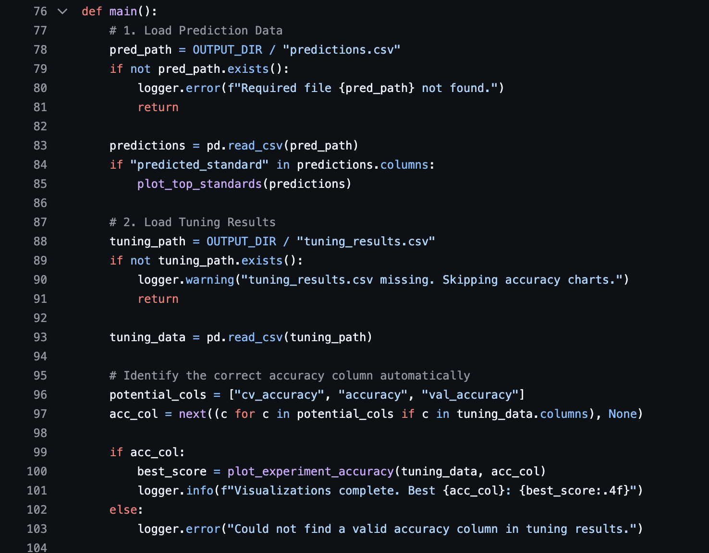
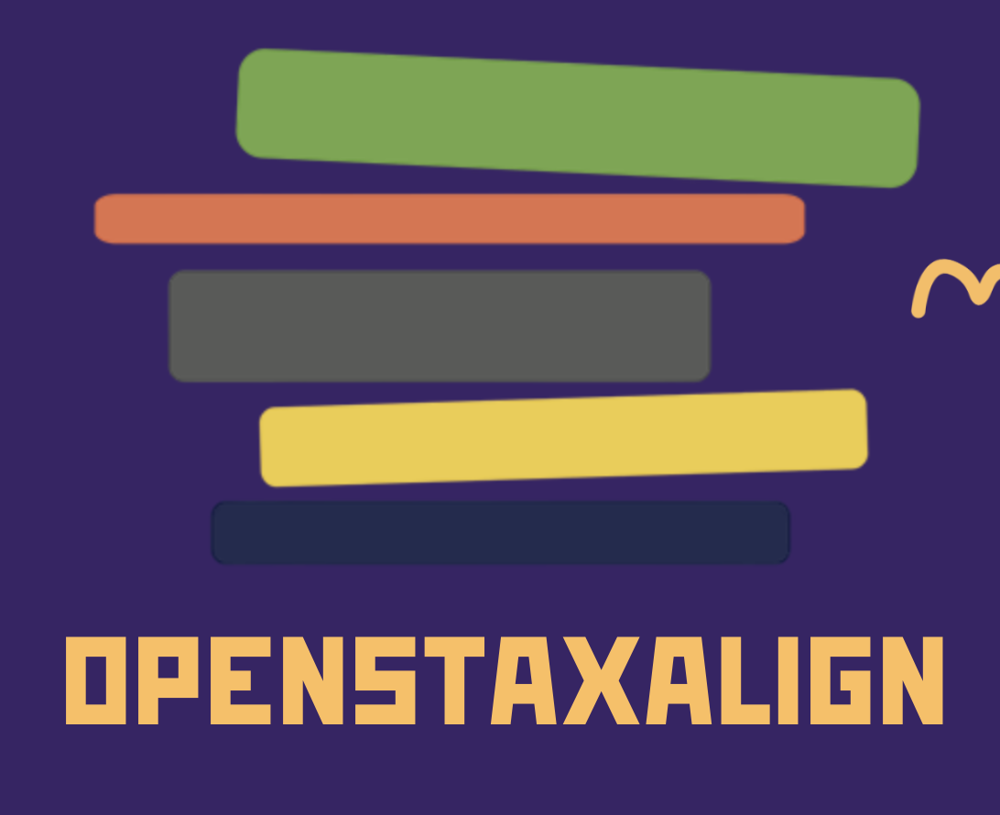
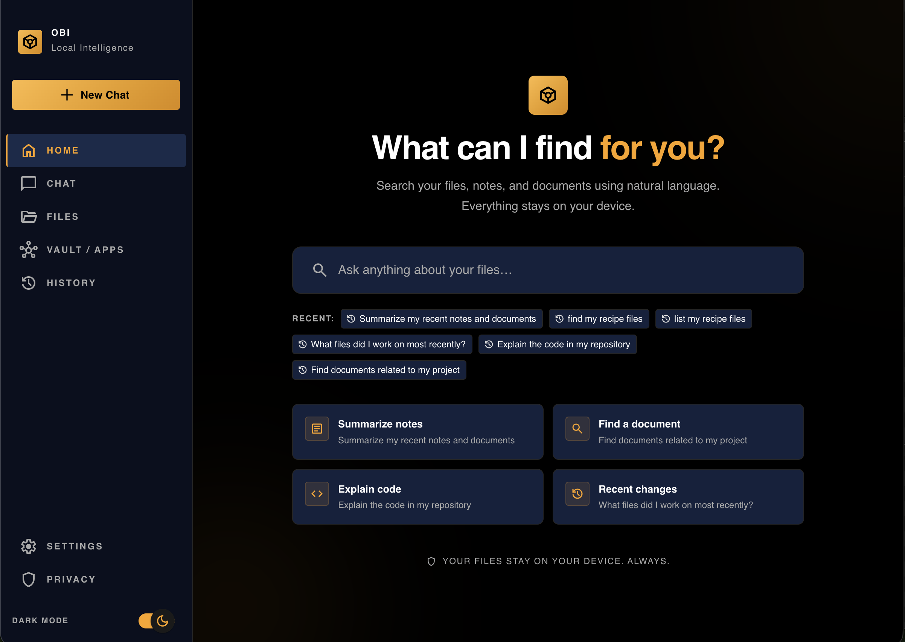
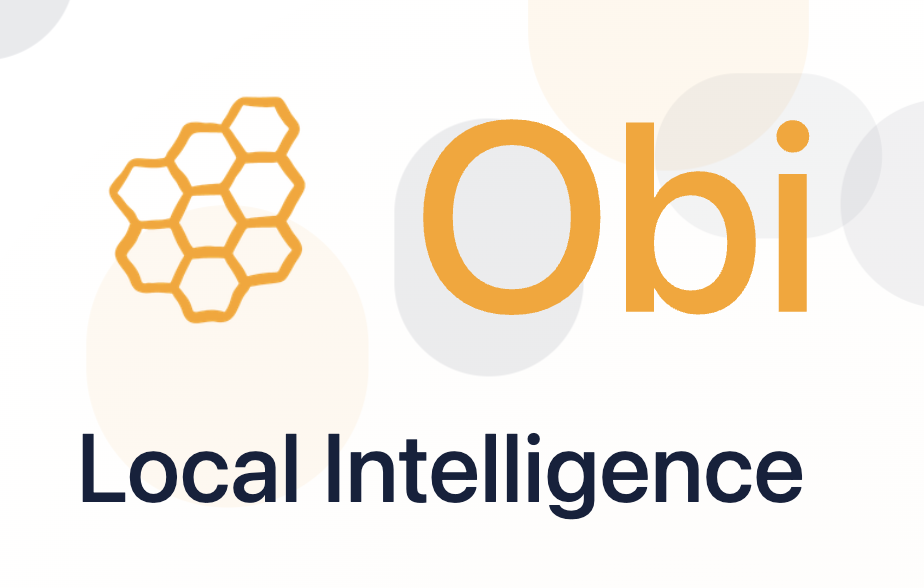
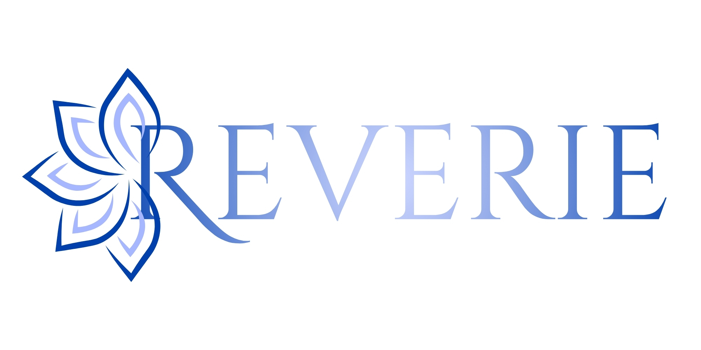

Projects & Technical Work
Some of these started on a hackathon floor with 36 hours on the clock. One grew into a full senior capstone with four playable worlds and AI companions. Another has been running on a live campus since 2024. What they share: a problem I couldn't stop thinking about, and no tolerance for "good enough."
Featured Projects




Other Projects


